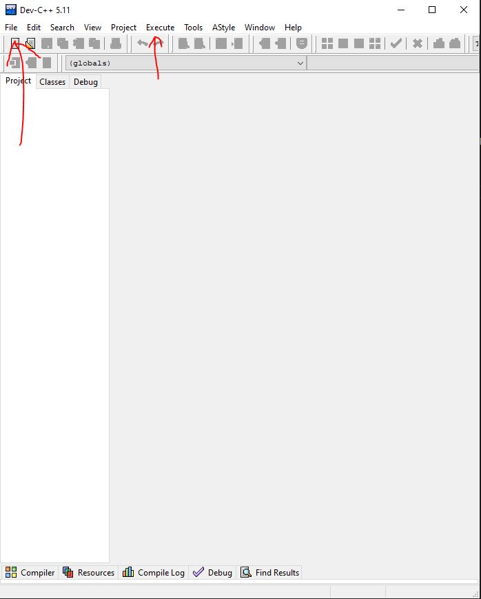

Οδηγίες Εγκατάστασης Dev-C++
Το πρόγραμμα αυτό είναι ουσιαστικά ένας editor για την συγγραφή προγραμμάτων σε C ή C++
Για την εγκατάσταση
Το πρόγραμμα αυτό απευθύνεται μόνο σε χρήστες του λειτουργικού των windows. Αφού πατήσετε τον παραπάνω σύνδεσμο θα ξεκινήσει αυτόματα το κατέβασμα του προγράμματος.
Ανοίξτε το αρχείο που κατέβηκε. Το παράθυρο που θα ανοίξει θα σας ζητήσει να επιλέξετε γλώσσα. Οπότε βάζετε "English" και πατάτε "OK".
Στο επόμενο παράθυρο επιλέγετε "I Agree" και στο επόμενο "Next". Μετά μπορείτε να αλλάξετε το folder που θα εγκαταστήσετε το πρόγραμμα και στη συνέχεια πατήστε "Install".
Όταν τελειώσει πατήστε "Finish" και είστε έτοιμοι. Την πρώτη φορά που θα το ανοίξετε θα σας ζητήσει να βάλετε το στυλ που θέλετε να έχει ο editor (μπορείτε να το αλλάξετε
και αργότερα). Για τα βασικά μπορείτε να επιλέξετε "Next", "Next" και "OK".
Όταν ανοίξετε το πρόγραμμα θα εμφανιστεί το παρακάτω παράθυρο. Επιλέξτε πάνω αριστερά το "File", μετά "New" και το "Source File".
Θα ανοίξει αυτόματα ένα κενό αρχείο "Untitled1", στο οποίο μπορείτε να γράψετε κώδικα που να εκτελεί οποιαδήποτε λειτουργία θέλετε.

Όταν τελειώσετε μπορείτε να κάνετε save το αρχείο σας πάλι από το "File" και μετά το "Save". Στην επιλογή "File name: " βάλτε το όνομα που θέλετε.
Στην επιλογή "Save as type: " επιλέξτε "C source files(*.c)" και ύστερα πατήστε "Save". Ο κώδικάς σας έχει αποθηκευτεί όπου επιλέξατε.
Για να τον τρέξετε επιλέξτε στο "Execute" την επιλογή "Compile & Run". Έτσι θα ανοίξει ένα νέο παράθυρο με το αποτέλεσμα.
Από εκεί κι πέρα, ασχοληθείτε μόνοι σας, πειραματιστείτε με τις επιλογές/συντομεύσεις και μάθετε το πρόγραμμα αυτό!